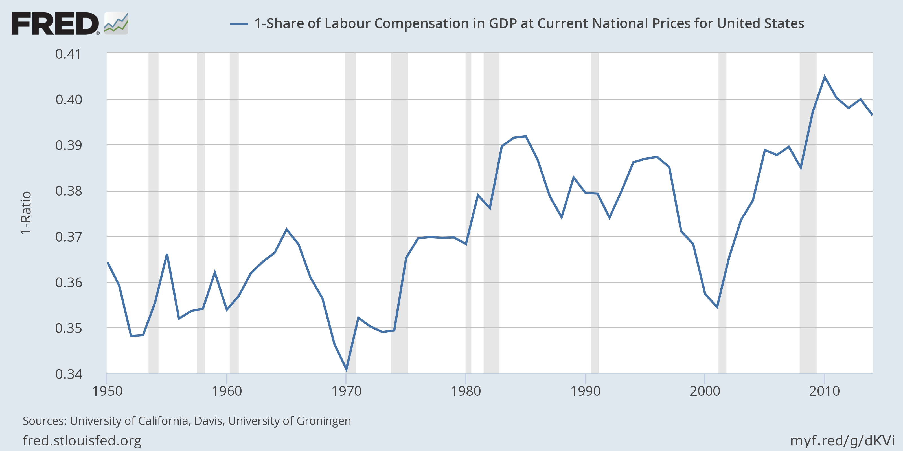
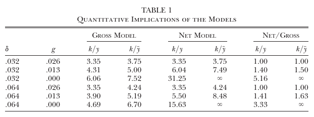
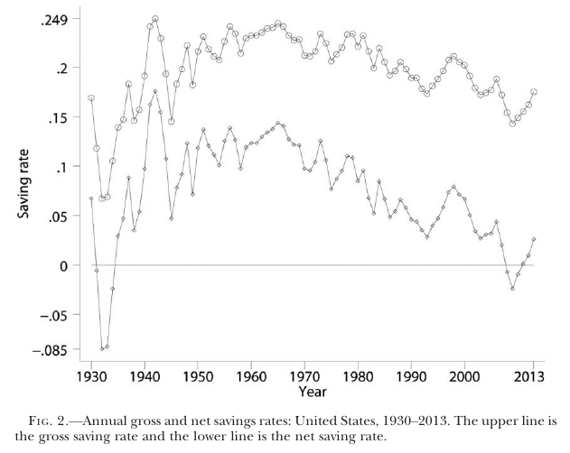
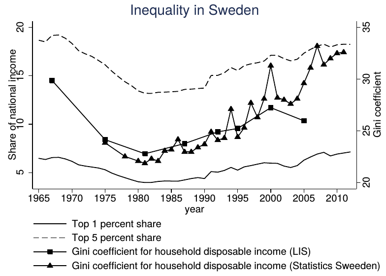
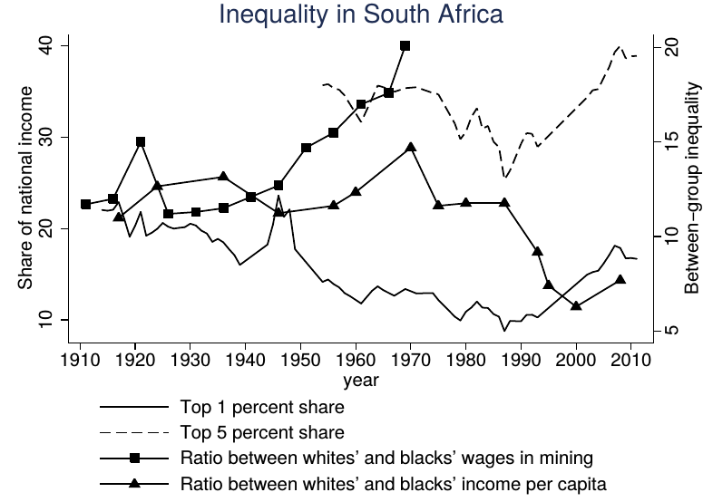

Critiques of Piketty's Capital
ECON 499: Economics of Inequality
Winter 2018
Piketty's "first fundamental law of capitalism"
\[\text{Capital share of income}=\alpha =r\dfrac{K}{Y}\]
- Just a definition
- \(r\) is the return on capital
- \(rK\) is capital income per year
- \(rK/Y\) is share of capital income to total income (Y)

Why is \(\alpha\) changing?
- Changes in r, s, g not enough to explain changes in \(\alpha\)
- Evidence suggests that increase in \(\alpha\) mostly attributed to rising home prices
- Housing more evenly distributed than other forms of wealth
Piketty's "second fundamental law of capitalism"
\[\dfrac{\bar{K}}{\bar{Y}} = \dfrac{s}{g}\]
- \(s\) is the net savings rate
- \(g\) long-run growth rate
- \(Y\) is net income
Savings rates
- Basic Solow: constant gross savings rate
- Piketty's Solow: constant net savings rate
- If \(g\) falls, \(K/Y\) rises if \(s\) remains unchanged
- How will \(K/Y\) change as \(g\) falls in both models?

Which model is better?
- The savings rate is a decision variable
- Models with endogenous savings seem to suggest that "basic" Solow is closer to "microfounded" agent behavior
- With competitive markets, net savings is theoretically 0!
- What do the data say?

\(r-g~\) in theory
- \(r>g\) does not necessarily imply more inequality
- Small amounts of social mobility mean \(r>g\) can lead to a decrease in inequality
- High returns on capital encourage people to save more, accumulate wealth (endogenous \(s\))
\(r-g~\) in history
- Piketty does not show any correlations between \(r-g\) and inequality
- From 1870 to 2012:
- Increases in \(r-g\) are not associated with rising top income share
- Same holds for many definitions of \(r\)
- No long term effects in the data either
Capital mobility and capital returns
- Capital is generally very mobile across national boundaries
- The rich can earn a high return even if there are low returns in their home country
- Returns should equalize across countries
- Wealth accumulation should occur everywhere



South Africa and Sweden
- Both countries capitalist
- "Fundamental laws of capitalism" should apply equally in both places
- Inequality in SA much different than inequality in Sweden
- SA inequality was/is institutionalized (apartheid)
- Changes in inequality reflect changes in institutions more than \(r-g\)